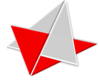

Conheça quem desenvolveu e o propósito do site da Semana Paulo Freire da ETECVAV.
Voltar para HomeEste site foi criado como parte do projeto da Semana Paulo Freire da ETECVAV, com o intuito de divulgar informações sobre a vida e o legado do educador Paulo Freire, bem como as atividades e ações realizadas durante o evento na escola.
A proposta busca integrar o conhecimento técnico de desenvolvimento web com a reflexão crítica sobre a educação libertadora proposta por Freire.
Durante a Semana Paulo Freire, os alunos da ETECVAV desenvolvem atividades educativas, culturais e solidárias, inspiradas nos ideais de diálogo, inclusão e transformação social defendidos por Paulo Freire. O site tem o papel de registrar, compartilhar e valorizar essas experiências.